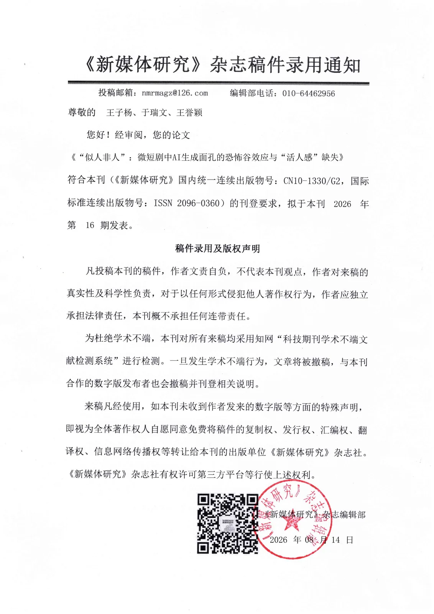
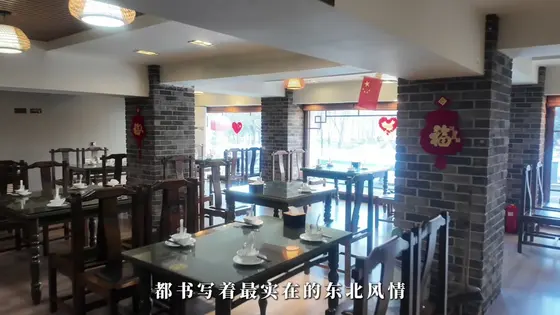
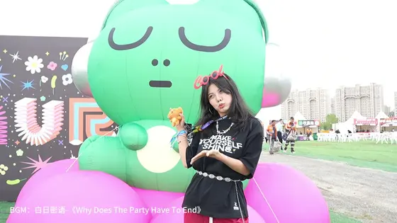
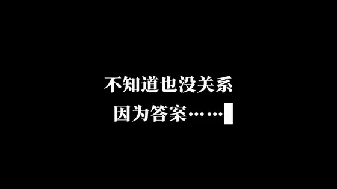
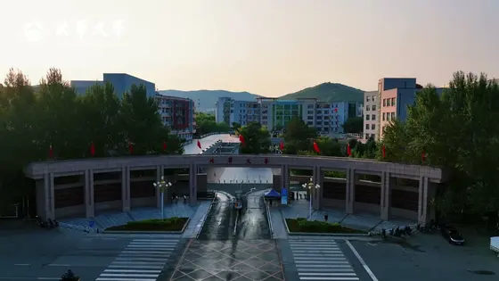
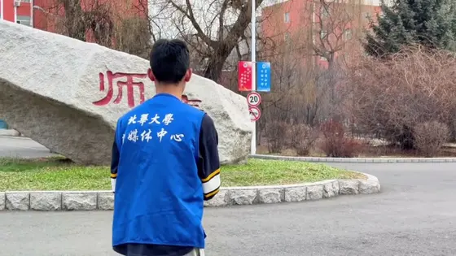
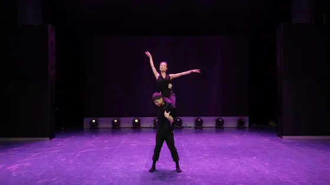
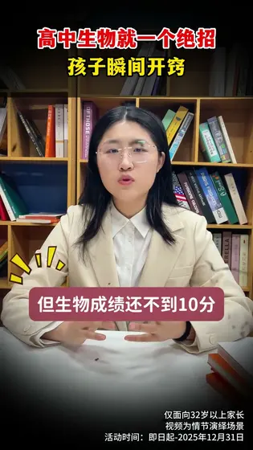
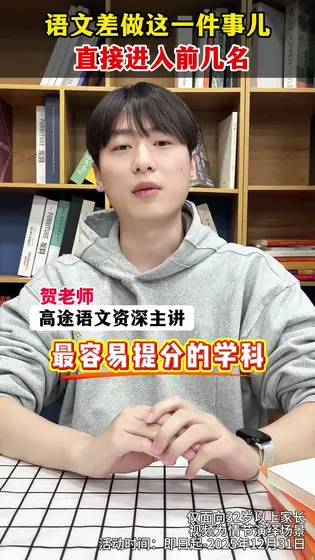
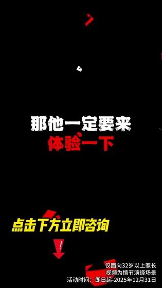

2025.12 黔山秀水地 文明润万家（贵州省首届AIGC数智广告创作大赛）Scenic Landscapes of Guizhou, Civilization Enriching Every Home (The 1st Guizhou AIGC Digital-Intelligence Advertising Creation Contest)
站内为压缩版 · 原片见网盘链接Compressed preview · full file via Baidu Disk
👋 你好，我是 王子杨，一名👋 Hi, I am Ziyang, an aspiring

/ 关于我/ ABOUT ME
我在苏州长大，北华大学材料化学读到第四年——但真正在做的事是内容。工科训练给我的是拆解能力：把一件事拆成变量、验证、再复用。I grew up in Suzhou and am in my fourth year studying materials chemistry at Beihua University, but what I actually do is content. Engineering training taught me to decompose: split a problem into variables, test it, then reuse it.
先后在苏州广电旗下的更广科技做采编、在灵犀互动做小红书内容运营、在本色美术馆做运营助理。四段实习，两座城市，累计 200+ 条短视频笔记与 5+ 场大会影像。I worked in editorial at Guangguang Tech under the Suzhou Media Group, in Xiaohongshu content operations at Lingxi Interactive, and as an operations assistant at Bense Art Museum. Four internships, two cities, 200+ short-video posts and coverage of 5+ major conferences.
业余做研究：一篇关于微短剧 AI 生成面孔的论文，第一作者，被《新媒体研究》录用并收录知网——用数字民族志和扎根理论编码，分析了 1000 条评论与 30 部 AI 短剧。I also research: a first-author paper on AI-generated faces in micro-dramas, accepted by New Media Research and indexed on CNKI, using digital ethnography and grounded-theory coding across 1,000 comments and 30 AI dramas.
近一年把 AI 当同事：用 Codex / WorkBuddy 交付前端 UI 与原型，把 Agent 嵌进选题—制作—校验的整条任务流。This past year I have treated AI as a teammate: shipping front-end UI and prototypes with Codex and WorkBuddy, embedding agents into the full topic-production-review pipeline.
苏州广电旗下。参与盛虹集团、锦达丝绸、亨通集团等头部企业访谈外拍，统筹灯光、机位、布景与节奏，累计 5+ 场访谈、3+ 支宣传片全流程。Under Suzhou Media Group. Shot executive interviews for leading enterprises — managing lighting, camera setup and pacing across 5+ interviews and 3+ promo films.
负责「求职百科书」原创栏目全流程制作，累计 6 期，涵盖嘉宾采访、稿件采编与推文排版推送。Ran the original column "Career Encyclopedia" end to end — six episodes covering guest interviews, copy editing and article layout.
小红书内容营销。服务新东方在线、高途 1v1、兴趣岛等客户，日均产出 7–13 条短视频笔记，累计 200+ 条。Xiaohongshu content marketing for clients including Koolearn and Gaotu — 7–13 short-video posts per day, 200+ in total.
长三角头部东方美学空间。担任「气味上海春季展」线上面试官，完成 50+ 投递者面试筛选，录用 20+ 人到岗。Interviewed 50+ candidates online for the Scent Shanghai Spring Exhibition and onboarded 20+.
八个板块 · 48 件作品，按媒介与场景分类；点击上方分类可快速跳转。站内视频为压缩版，完整原片见网盘链接。Eight sections, 48 works, sorted by medium and scene — use the tabs above to jump. Videos here are compressed previews; full files are on the disk.
普通站桩练习常见三个问题：不知道姿势是否正确、无法判断自己真正练了多久、缺少即时反馈。「桩正」把它拆成一条闭环：摄像头识别 → 桩姿准入 → 实时量化评分 → 语音纠偏 → 有效计时。强调「有效姿态优先」——坐着、休息、离开画面或姿态不合格，都不计入训练数据。Three problems plague standing meditation: you can't tell if your posture is right, you can't measure real practice time, and there's no live feedback. Zhuang Zheng closes the loop: camera recognition → stance gating → live scoring → voice correction → valid-time tracking. Only genuinely valid posture time counts.
TruthPass 让真实性可验证：消费者不再只是购买商品，而是通过自己的 AI Agent 与 EVM 钱包，介入生产、检测、交接、购买绑定与售后维权全过程。以深海鱼油首发，跑通「AI 对话 → 溯源验证 → 多钱包连接 → BOT Chain 主网上链 → 检测报告」闭环。TruthPass makes authenticity verifiable. Consumers no longer just buy a product — through their own AI agent and EVM wallet they take part in production, inspection, handover, purchase binding and after-sales claims. Launching with deep-sea fish oil.
以微短剧为对象，讨论 AI 生成面孔引发的恐怖谷效应与「活人感」缺失。数字民族志 + 扎根理论编码，分析 1000 条评论与 30 部 AI 短剧。On the uncanny valley and the loss of liveness in AI-generated faces in micro-dramas. Digital ethnography with grounded-theory coding across 1,000 comments and 30 AI dramas.










Blender 程序化建模 + Three.js 第一人称空间漫游，零外网依赖。2140 年，一座中国古典园林被整体移植进近地轨道舱——洞门成为舷窗，花窗成为观察窗。Blender procedural modelling plus a Three.js first-person walkthrough. In 2140 a classical Chinese garden is lifted into an orbital module — the moon gate becomes a porthole.
基于 4K 全景视频 + 原生 WebGL + Three.js 的滑雪损伤预防科普。四个学习模块共享同一套积分与学习档案。An interactive panoramic learning system for preventing skiing injuries, built on 4K panoramic video, native WebGL and Three.js.
让 AI agent 扮演留学机构前期顾问：7 阶段对话收集背景，产出评估报告、画像对比与案例汇总表。A skill that lets an AI agent act as a study-abroad pre-consultation advisor: seven dialogue stages, then a report, a profile comparison and a data sheet.
无论是实习机会、项目合作，还是想聊聊 AIGC 与内容生产——都欢迎联系。Internships, project collaboration, or just a chat about AIGC and content production — all welcome.